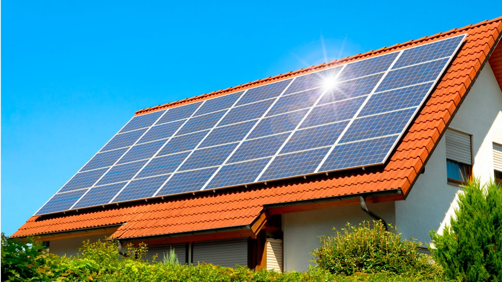

Felipe
Souza
CEO

Quiz



Energia solar em casa: o que você precisa saber
No mundo,formas alternativas de geração de energia elétrica crescem cada vez mais. Isso vale tanto para estabelecimentos comerciais e industriais quanto para residências. Mas como usar uma geração alternativa de eletricidade para a sua moradia?...Ver Mais
Reciclagem: O que é e como você pode contribuir
Reciclar os resíduos gerados diariamente traz diversos benefícios à sociedade e ao meio ambiente. Entre os destaques estão o apoio à geração de renda em cooperativas que processam os itens, a redução dos impactos no meio ambiente, a diminuição da extração de matéria prima para utilização nas indústrias...Ver Mais